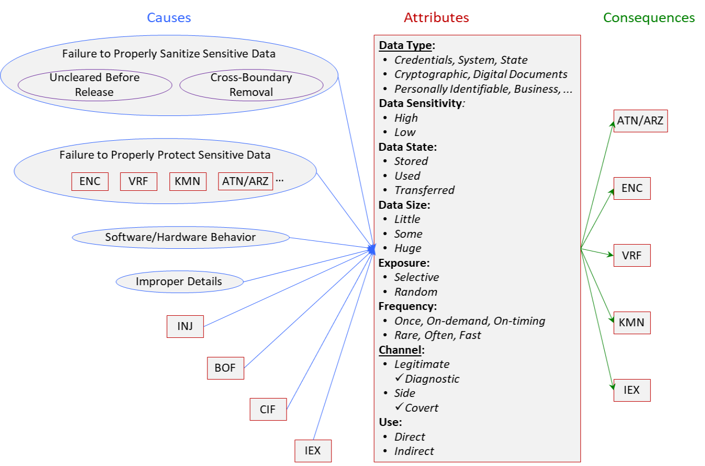

Information Exposure (IEX) Class
Definition
We define Information Exposure (IEX) as:
Information is leaked through legitimate or side
channels.
Note that leakage to an entity that should not have information is included, not just
leakage that is a security concern.
Type
Taxonomy
Fig. 1 depicts IEX causes, attributes and consequences.

Fig 1.
Information Exposure (IEX) Class
- click on image for detailed view.
Attributes
The attributes of IEX are:
Information– Credentials, System Data, State Data, Cryptographic Data, Digital Documents,
Personally
Identifiable Data, Business Data, etc.
This indicates the sensitivity level of leaked information. Highly sensitive information
that is encrypted, or information that is non-sensitive would not result in harm if
and exposed. Non-sensitive information includes public records, phone books, or online
directories.
Information State – Stored, Used, Transferred.
This reflects if the information is in rest, in use, or in transit. Information can
be in rest in files (e.g. ini, temp, configuration, log server, debug, cleanup, email
attachment, login buffer, executable, backup, core dump, access control list, private
data index), directories (Web root, FTP root, CVS repository), or on discs. Information
can be in use by functions/programs -- source code (incl. comments); threads, registries,
cookies, GUI, environmental variables. Data can be also in transit between processes
or over a network.
Information Size – Little, Some, Huge.
This indicates how much information is leaked.
These distinctions are important in some cases. For instance, Heartbleed [2] might not
have been a severe problem if it just exfiltrated a little data. The fact
that it may exfiltrate a huge amount of data greatly increases the chance that very
important information will be leaked.
Exposure – Selective, Random.
This reflects if an attacker can choose what information to expose or where. Selective
means the attacker can choose where and what to read. Random is like going through
the trash (e.g. Heartbleed [2]).
Frequency – Once, On-demand, On-timing, Rare, Often, Fast.
This indicates how often the exposure can/does occur. On-timing means depending on
timing (e.g. in race condition). Note that Frequency * Size = Rate.
Channel– Legitimate, Diagnostic, Side, Covert.
This indicates the medium by which information was leaked.
Direct means leaked information is valuable on its own. Indirect means it is only
useful for launching other attacks.
Causes
In the graph of causes, Uncleared Before Release means information going from one control sphere
back to the general pool. Cross-Boundary Removal means information going from one control sphere to
another control sphere. A control
sphere is a set of resources and behaviors that are accessible to a single actor or
a group of actors that all share the same security restrictions.
Protect Sensitive Data also covers preparing sensitive data.
Software/Hardware Behavior covers algorithms and execution. Observable behavior (time, power, cache
lines) depends
on the data.
Improper Details include passwords, paths, SQL query structure/logic, etc. in error/exception, etc.
messages.
ENC includes failure to encrypt (cleartext storage, recoverable format storage, cleartext
transmission) and failure to properly encrypt (inadequate encryption strength, use
of risky/broken cryptographic algorithm, missing required cryptographic step, use
of hard-coded cryptographic key).
ATN/AUT includes improper authentication, credentials compromise, account access.
INJ includes adding commands and masking legitimate commands or information.
CIF is control of interaction frequency, including limiting the number of failed log
in attempts. If there is no limit on the number of attempts, account names or passwords
may be discovered by brute force attacks.
Consequences
One information exposure (IEX) fault may lead to another information exposure. For
instance, an information exposure of all client credit cards may have been caused
by earlier obtaining the password for a privileged account.
Related BF Classes
BF classes related to IEX are: BOF, INJ, CIF, ENC, VRF, KMN, TRN, PRN.
Related CWEs and SFP
CWEs related to IEX are: CWE-8,
CWE-11, CWE-13, CWE-200, CWE-201, CWE-202, CWE-203, CWE-204, CWE-205, CWE-206, CWE-207, CWE-208, CWE-209, CWE-210, CWE-211, CWE-212, CWE-213, CWE-214, CWE-215, CWE-226, CWE-244, CWE-260, CWE-359, CWE-377, CWE-385, CWE-402, CWE-403, CWE-433, CWE-488, CWE-492, CWE-495, CWE-497, CWE-498, CWE-499, CWE-524, CWE-514, CWE-515, CWE-525, CWE-527, CWE-528, CWE-529, CWE-530, CWE-532, CWE-535, CWE-536, CWE-537, CWE-538, CWE-539, CWE-540, CWE-541,CWE-546, CWE-548, CWE-550, CWE-552, CWE-555, CWE-598, CWE-612, CWE-615, CWE-642, CWE-651, CWE-668.
There are many related CWEs because information exposure can be the consequence of
many weaknesses.
The only related SFP cluster is SFP Primary Cluster: Information Leak.
BF Descriptions of IEX Related CWEs are provided here.
Application
Application examples are provided here.
References